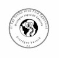

Adószám: 19343211-1-05
Határozottan és megalkuvást nem tűrve állunk az állampolgárok mellett, segítve őket a jogsértések feltárásában, jogaik érvényesítésében és a jogi problémák sikeres megoldásában.
Az Út Egy Szebb Jövő Felé Egyesület – Országos Jogvédő Kabinet célja, hogy hatékony támogatást és szakszerű jogvédelmet nyújtson mindazoknak, akik jogi kérdésekkel vagy problémákkal szembesülnek, de anyagi lehetőségeik korlátozzák őket a hatékony érdekérvényesítésben és az ügyvédi képviselet igénybevételében.
Jogsegélynyújtás:
Hivatalos beadványok, panaszok és jogi dokumentumok szakszerű elkészítése.
Érdekképviselet
Teljes körű képviselet biztosítása bíróságok, kormányhivatalok és egyéb hatóságok előtt.
Jogi tanácsadás:
Hatósági eljárások átvilágítása és a törvényes lehetőségek pontos felmérése.